Giava Orientale / Indonesia
Sound Horeg / Storia 01
Una festache devetremare
Nella Giava Orientale ci sono persone che si spostano da un paese all’altro per inseguire un determinato impianto audio. Non seguono un cantante o un gruppo. Seguono le casse.
È il sound horeg. Horeg, in giavanese, significa tremare: file di camion carichi di altoparlanti e grandi subwoofer attraversano lentamente i villaggi durante feste e carnevali. Le casse possono superare i tetti delle case; nelle strade più strette i mezzi passano appena fra muri, alberi e cavi sospesi. Dietro si cammina, si balla, si segue il corteo.
Ma la musica, da sola, non spiega il fenomeno. Quello che si cerca soprattutto è la sua potenza.
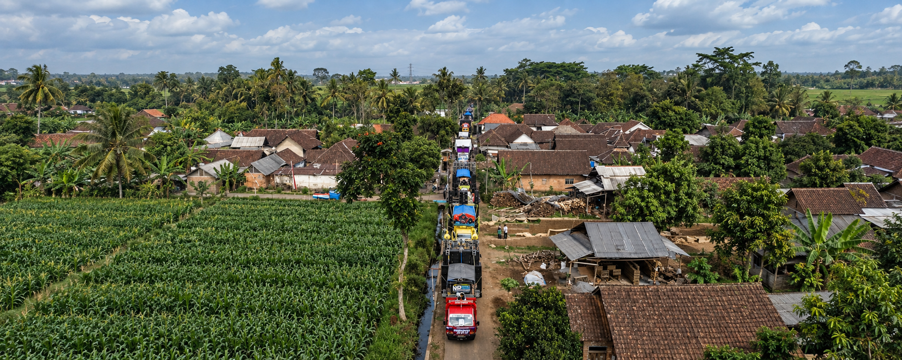
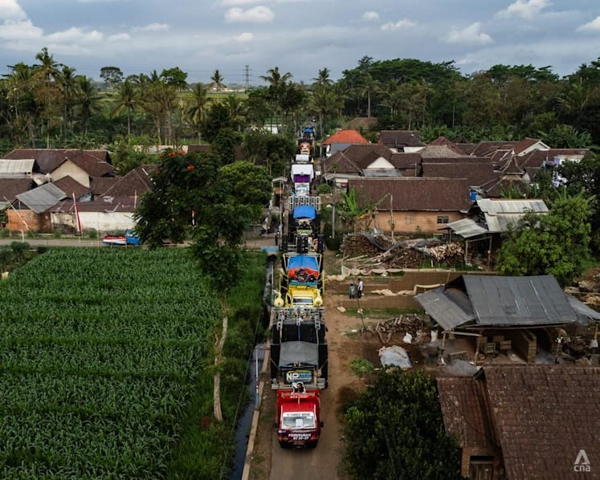
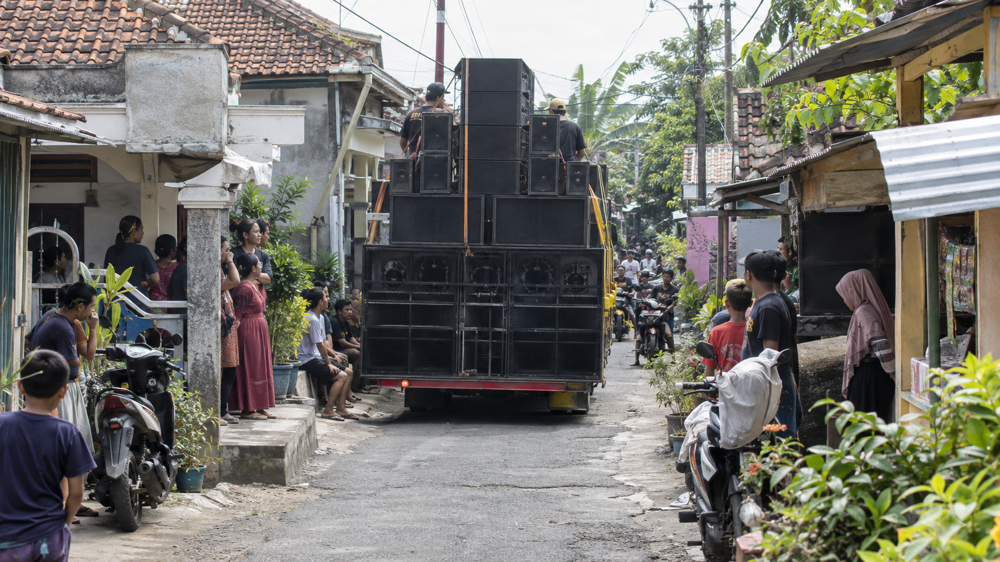
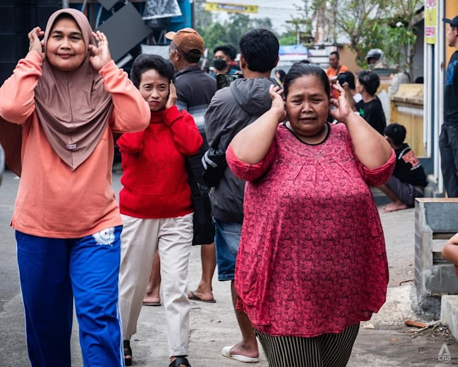
Le basse frequenze devono arrivare al corpo, produrre pressione, far vibrare il petto. È questa la sensazione cercata: non semplicemente una musica abbastanza forte da riempire una strada, ma un sistema capace di trasformarla in qualcosa di fisico, che occupa insieme l’aria e il corpo.
A volte il limite lo porrebbero proprio quelli che gli impianti li possiedono. Spingerli continuamente al massimo significa mettere a rischio casse e amplificatori. Ma chi organizza la festa vuole che si senta di più. Se altrove un sistema ha impressionato per la sua potenza, quello successivo deve riuscire a reggere il confronto.
È così che la competizione ha spinto verso impianti sempre più imponenti e livelli sempre più estremi. Le compagnie hanno acquistato una reputazione propria, vengono prenotate con largo anticipo e il loro calendario viene seguito dagli appassionati: si cerca la prossima festa in cui sarà presente quel particolare sistema.
È forse la cosa più singolare del sound horeg: non si segue soltanto la musica. Si segue la potenza che quelle casse sono capaci di produrre.
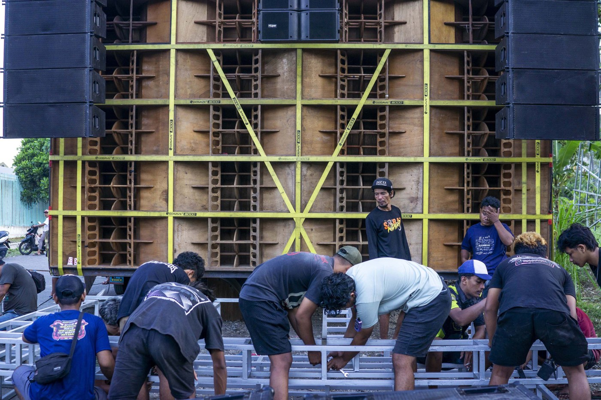
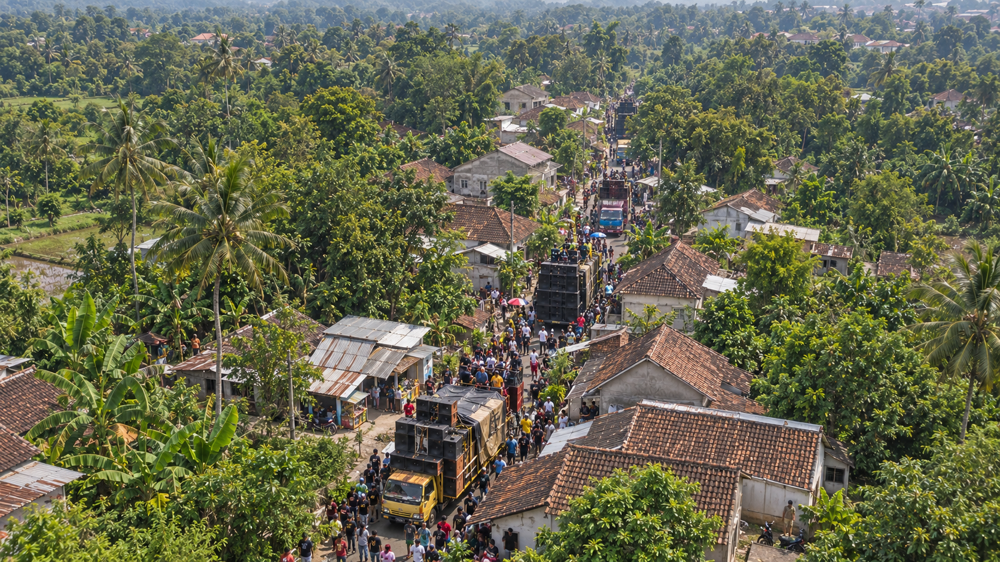
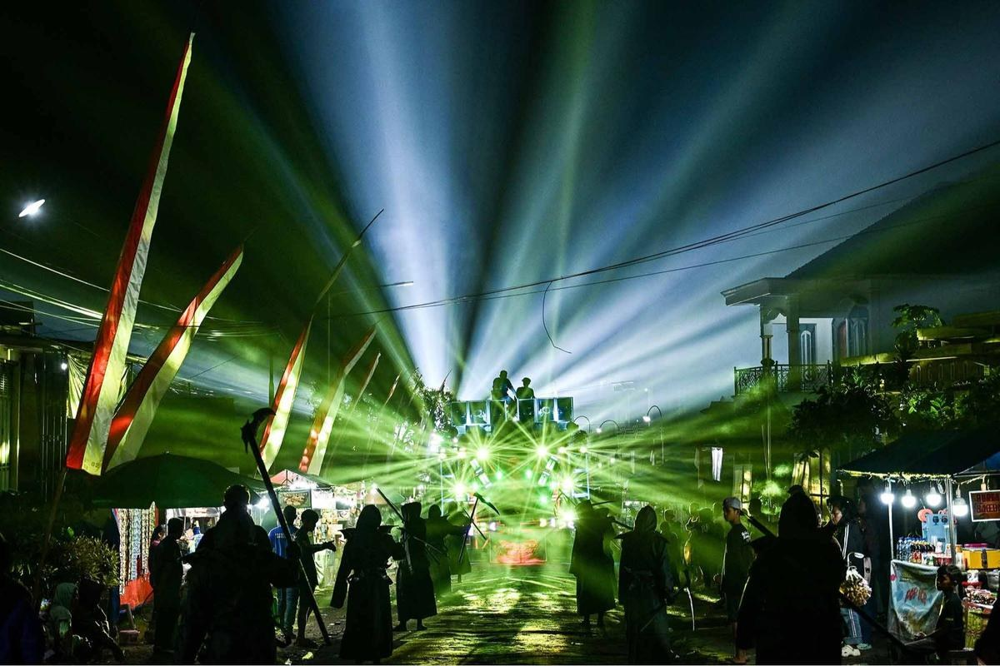
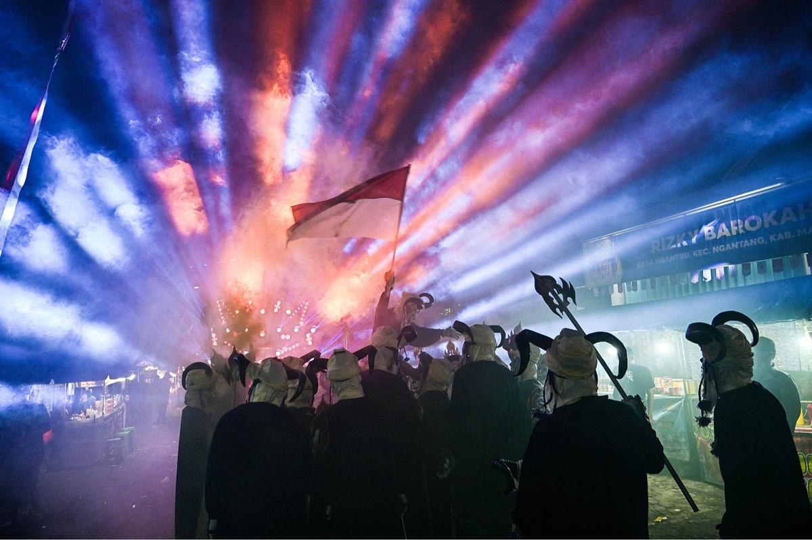
Conta quanto in basso arrivano, quanta pressione sviluppano, quanto riescono a mettere fisicamente in movimento l’aria intorno. Da una festa all’altra si va a cercare di nuovo quella sensazione, o una ancora più intensa.
E tutto questo avviene dentro feste che avevano già una propria storia.
Si segue la potenza.
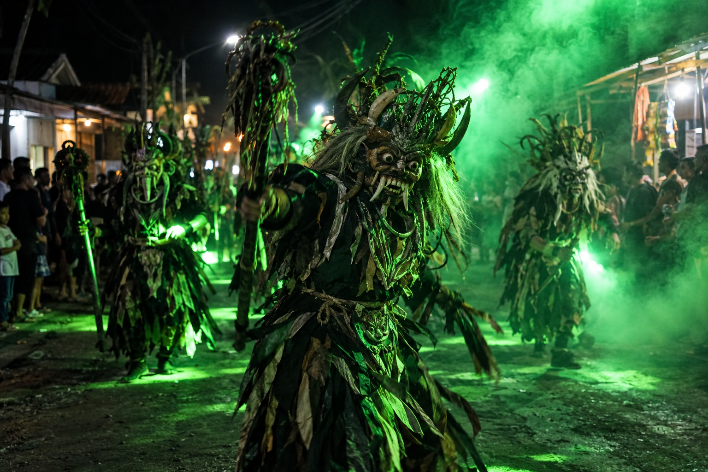
Non sono eventi nati attorno a un sound system. Sono feste popolari, ricorrenze dei villaggi, celebrazioni dell’indipendenza, bersih desa: occasioni in cui una comunità si ritrova, ricorda i fondatori o gli antenati, ringrazia per il raccolto, mangia insieme, prega, porta in strada costumi, danze e spettacoli. Per funzione sociale, più che per contenuto, possono ricordare le nostre feste di paese o le sagre: appuntamenti radicati nella vita di una comunità e ripetuti di anno in anno.
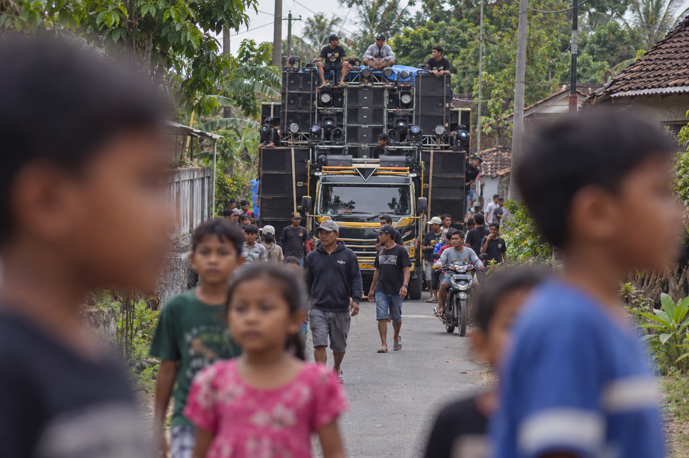
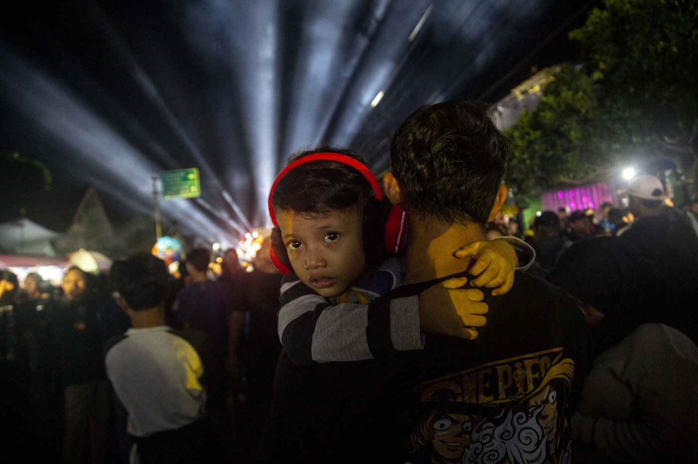
Il sound horeg entra dentro queste forme di festa già esistenti.
La processione conserva i suoi costumi, le sue memorie, le ragioni per cui il paese si ritrova. Ma nello stesso spazio compare una quantità di energia sonora che finisce per avere un valore proprio. Non serve più soltanto a sostenere ciò che sta accadendo: viene aspettata, confrontata, desiderata.
Si raccolgono soldi per averla. Si ricorda quanto suonava forte l’anno precedente. Si vuole sapere quale compagnia arriverà. Si cerca un sistema perché si conosce la pressione che è capace di produrre.
La musica potrebbe essere riprodotta con molto meno.
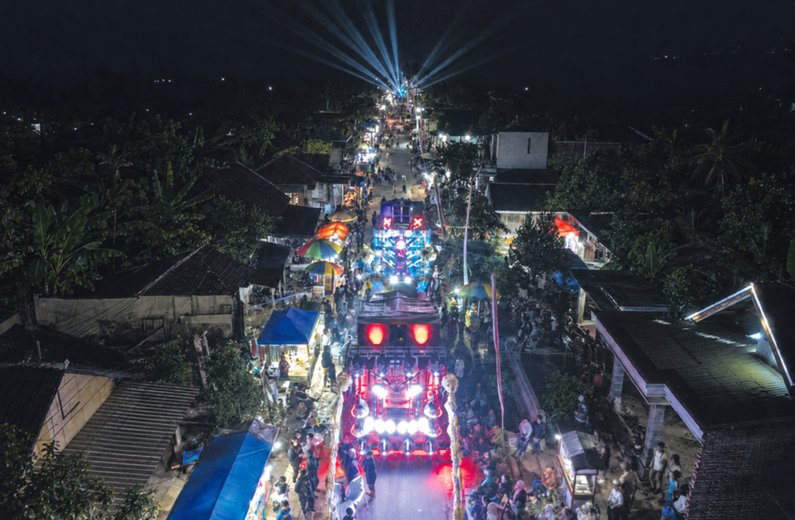
Il sound horeg comincia precisamente dove questo non basta più.